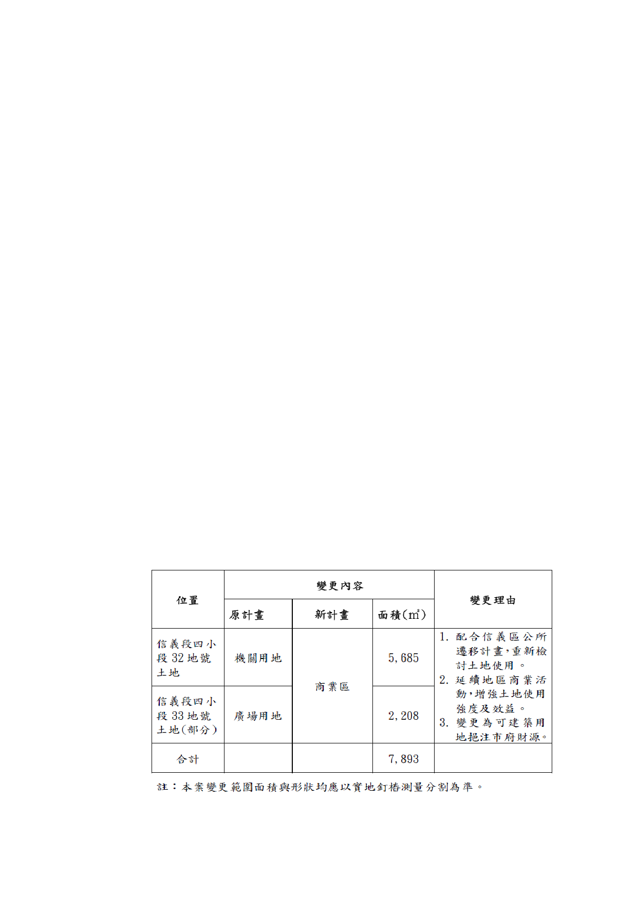

主要計畫變更部分，考量其急迫性，另案以主要計畫
個案變更方式辦理……」。
（四）本案經市府認定符合都市計畫法第 27 條第 1 項第 4
款，爰依前開決議辦理都市計畫個案變更。
四、 計畫目標與構想
（一） 配合信義計畫地區為台灣國際級金融、商務、購物及
休閒娛樂中心之定位，鼓勵多樣性商業活動，並與北
側南山廣場及西側台北 101 大樓相互呼應，創造地標
型建築景觀。
（二） 提高市有土地使用經濟效益，挹注公共住宅及公共設
施建設財源。
（三） 以全基地開發為原則，透過整體規劃西側廣場，與商
業空間、開放空間結合。
（四） 配 合周 邊建築 景觀 及附 近地區 之公 共開 放空間 及人
行道系統整體規劃設計，建立符合人性尺度之都市環
境。
五、 變更主要計畫、擬定細部計畫內容概述：
（一） 變更主要計畫：
1. 使用分區變更及其理由：
-6-